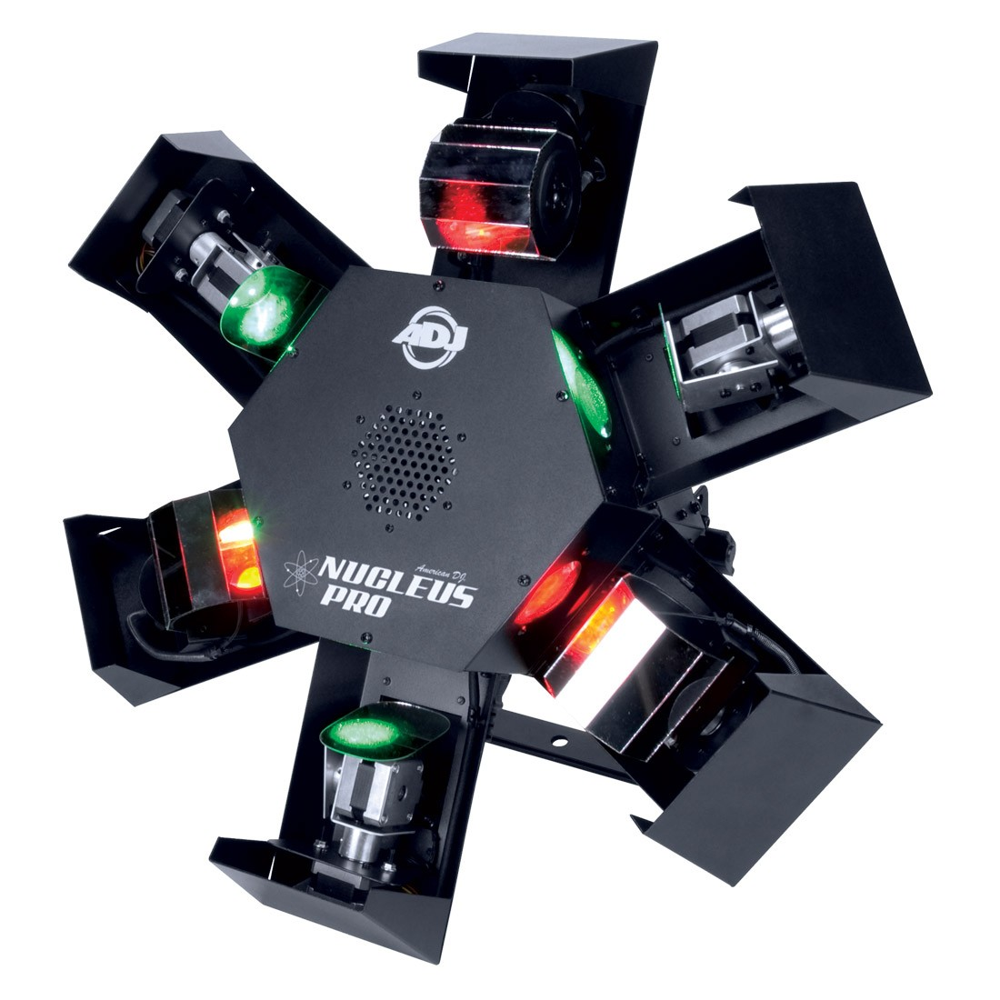

The ADJ Stinger is a three in one light fucture. It has a ring of strobe light around the edge with different peterns to chose from. A retating RGB collor light in middle what adds a realy cool efect. Last it had a red and green laser right in the middle that can cover the hole room.

The ADJ Nucleus Pro is my center light witch has 6 moving heads and can all move seperitly. Three of them are mirror tilt plats that tilt front and back and also left and right. The other three are mirror tubes that can spin and twist.